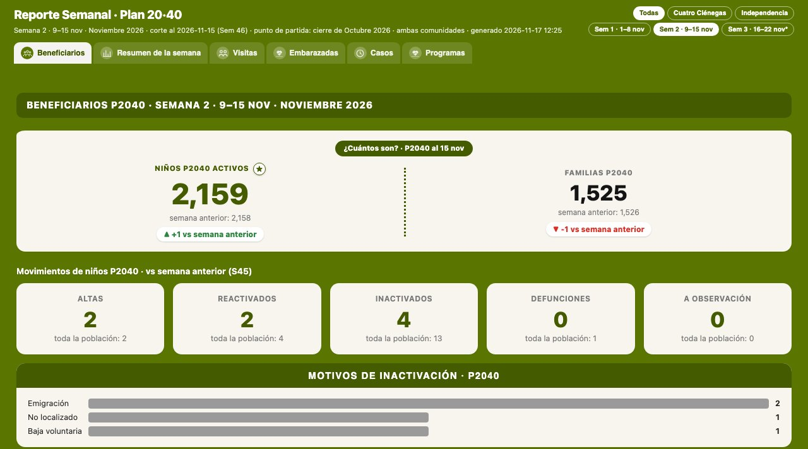
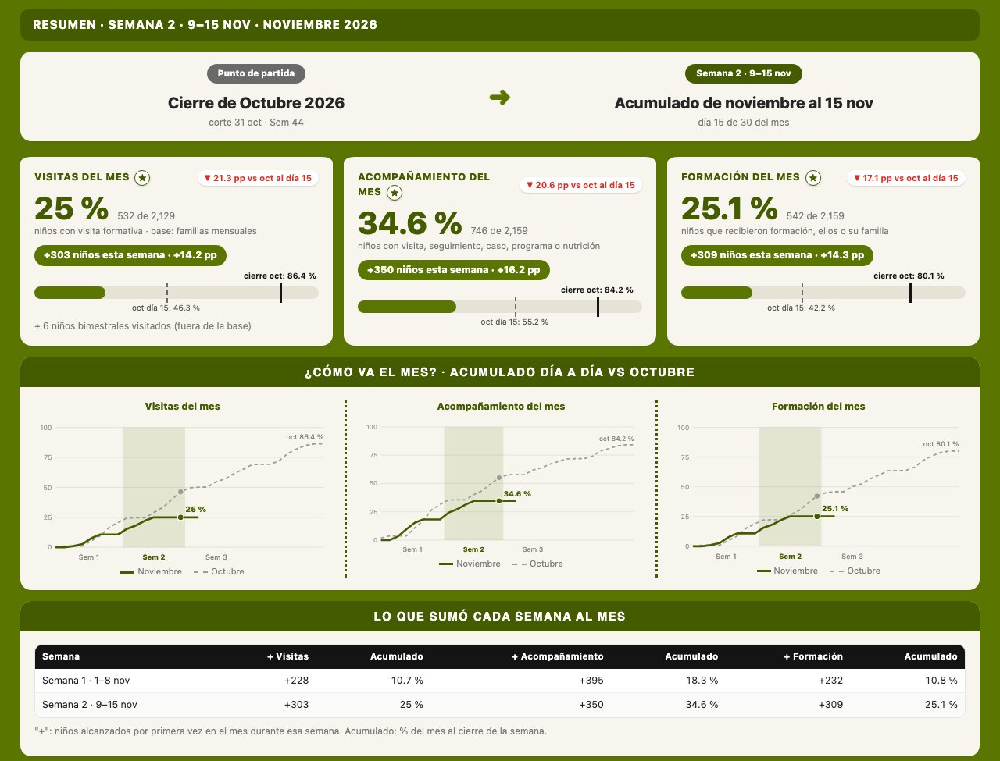
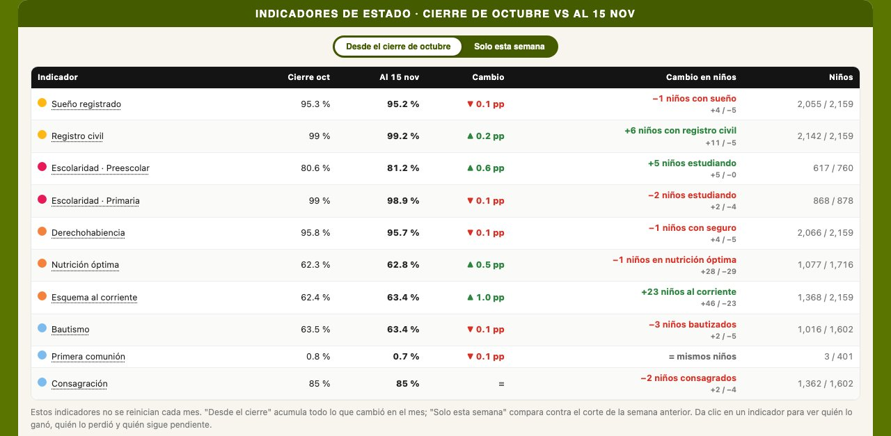
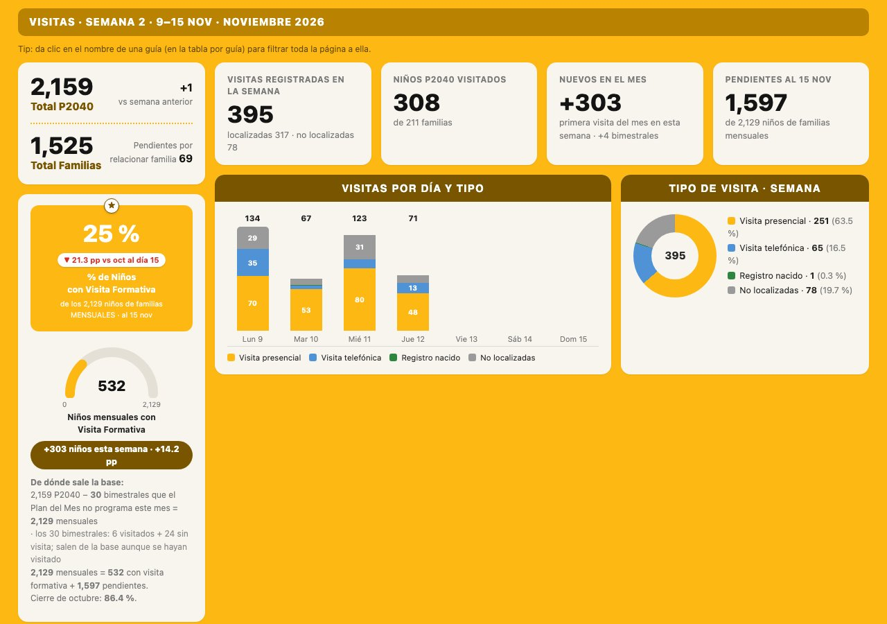

Manual del Reporte Semanal
Cómo va el mes en curso, semana a semana, contra el cierre del mes anterior: qué mide, de dónde salen sus números y cómo leerlo sin confundirse.
1¿Para qué sirve?
El Mensual dice cómo cerró el mes; el Semanal dice cómo va el mes mientras sucede. Sirve para darse cuenta a tiempo, a mitad del mes, de si vamos más lento que el mes pasado y corregir antes del cierre.
Usa exactamente las mismas reglas que el Reporte Mensual, así que al final del mes sus números coinciden con el cierre.
2¿De dónde viene la información?
3Cómo moverte en el reporte

- El renglón bajo el título dice la semana, la fecha de corte, si la semana va en curso y desde qué cierre se compara.
- Todas · Cuatro Ciénegas · Independencia: elige la comunidad.
- Sem 1, Sem 2…: elige la semana. La que tiene * va en curso y sus números todavía van a subir.
- Las pestañas: Beneficiarios, Resumen de la semana, Visitas, Embarazadas, Casos y Programas.
4Lo más importante: dos tipos de indicador
El Semanal maneja dos clases de indicadores que se leen distinto. Entender esto evita casi todas las confusiones.
| Tipo | Cuáles son | Cómo se leen |
|---|---|---|
| Del mes | Visitas, Acompañamiento y Formación del mes. | Empiezan en cero cada mes y suben conforme pasa el mes. Por eso al día 5 se ven bajos aunque todo vaya bien. Se comparan contra el mismo día del mes anterior («vs oct al día 15»). |
| De estado | Sueño, registro civil, escolaridad, derechohabiencia, nutrición, vacunas, bautismo, primera comunión y consagración. | No se reinician: son una situación que el niño tiene o no tiene. Se comparan contra el cierre del mes anterior para ver cuántos niños ganaron o perdieron. |
5Recorrido por pestañas
Da clic en una pestaña para ver qué responde y qué mirar primero.
Beneficiariosa fondo¿Cuántos niños P2040 tenemos esta semana y quién entró o salió?
- Niños P2040 activos ⭐ y familias al corte, contra la semana anterior.
- Movimientos de la semana: altas, reactivados, inactivados, defunciones y pasados a observación. «Toda la población» suma también a los demás perfiles (familiares, etc.).
- Motivos de inactivación: por qué salieron los niños de la semana.
- Más abajo están el detalle de cada movimiento, niño por niño, y las personas activas por tipo de perfil.
Resumen de la semanaa fondo¿Cómo va el mes comparado con el mes pasado al mismo día?

- Punto de partida → acumulado: arriba ves desde qué cierre se compara y hasta qué día va el acumulado del mes.
- Visitas, Acompañamiento y Formación del mes ⭐: el porcentaje acumulado, cuánto sumó esta semana y la comparación contra el mes anterior al mismo día. También el cierre del mes anterior como referencia.
- ¿Cómo va el mes?: las líneas del mes actual contra el anterior, día a día. Si la línea de este mes va por debajo, vamos más lento.
- Lo que sumó cada semana: cuántos niños nuevos aportó cada semana a cada indicador.
Indicadores de estado

Esta tabla compara los indicadores de estado contra el cierre. «Cambio en niños» dice cuántos ganaron y cuántos perdieron (por ejemplo «+46 / −23»). El botón «Solo esta semana» compara solo contra la semana anterior, y al dar clic en un indicador ves quién lo ganó, quién lo perdió y quién sigue pendiente.
Visitasa fondo¿Cuántos niños llevamos visitados y cuántos faltan?

- % de niños con visita formativa ⭐: niños de familias mensuales visitados en el mes. Debajo, «De dónde sale la base» explica la cuenta: todos los P2040 menos los bimestrales que el Plan del Mes no programa ese mes.
- Visitas registradas en la semana (localizadas y no localizadas), niños visitados, nuevos en el mes (su primera visita del mes cayó en esta semana) y pendientes.
- Visitas por día y tipo: presencial, telefónica, registro de nacido y no localizadas.
- Por guía: el avance de cada guía en el mes y en la semana. Da clic en el nombre de una guía para filtrar toda la página a ella. Hasta abajo está la lista de niños pendientes de visita.
Embarazadas¿Cómo están las mamás embarazadas y qué hay que hacer esta semana?
- Mamás en el tablero: embarazadas vigentes (y cuántas primerizas), en postparto, próximas a dar a luz y con ficha prenatal.
- Riesgo calculado con la ficha prenatal: alto, medio, sin factores o sin ficha.
- Qué hacer esta semana: llenar fichas prenatales, cerrar embarazos que siguen abiertos y visitar a quienes están por dar a luz. Más abajo, los factores de riesgo por tema.
Casos¿Cuántos casos hay abiertos y qué tan viejos son?
- Casos activos al corte, por estatus (en proceso, pendiente, monitoreo), y los abiertos y cerrados en la semana.
- Casos por pilar, por categoría y por antigüedad, y la lista de casos activos.
Programas¿Qué programas tuvieron actividad y a cuántos niños llegaron?
- Programas con actividad (PIN, Cinta MUAC y Jornada de peso y talla), asistencias, personas atendidas y niños P2040 alcanzados.
- El resumen por programa y, abajo, el detalle de cada uno.
6Preguntas frecuentes
¿Por qué no coincide con el Mensual?
A mitad de mes el Semanal muestra un acumulado parcial y el Mensual el último corte disponible. Al cierre del mes coinciden, porque usan las mismas reglas.
¿Por qué la semana en curso tiene casi todo en cero?
Porque acaba de empezar. Para leer una semana completa elige la anterior (la que no tiene *).
¿Qué es «vs oct al día 15»?
La comparación contra el mes anterior en el mismo punto del mes. Es la comparación justa para los indicadores del mes, que empiezan en cero cada mes.
¿Qué quiere decir «pp»?
Puntos porcentuales: la diferencia directa entre dos porcentajes. De 80 % a 85 % son 5 pp.